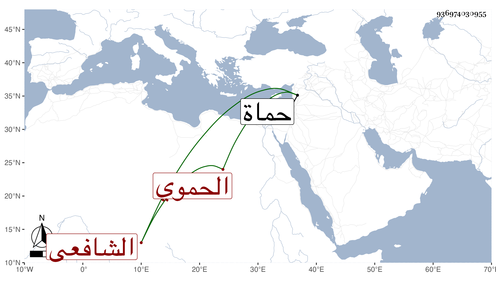

0902Sakhawi.DawLamic.ITO20230111-ara1.EIS1600.936974030955
Biography ID: 936974030955
408
محمد بن محمد بن علي بن محمد الحموي الشافعي ويعرف بابن الزويغة . ولد سنة أربع وسبعين وسبعمائة وسمع مع الخطيب الجمال بن جماعة في سنة اثنتين وثمانين وسبعمائة على الجلال عبد المنعم بن الجلال وكذا سمع على أبي الخير بن العلائي وغيره وكان صالحا عالما فاضلا واعظا مشهورا . قدم من حماة لبيت المقدس زائرا فمات به في سنة اثنتين وخمسين عن ثمان وسبعين . ذكره ابن أبي عذيبة .
